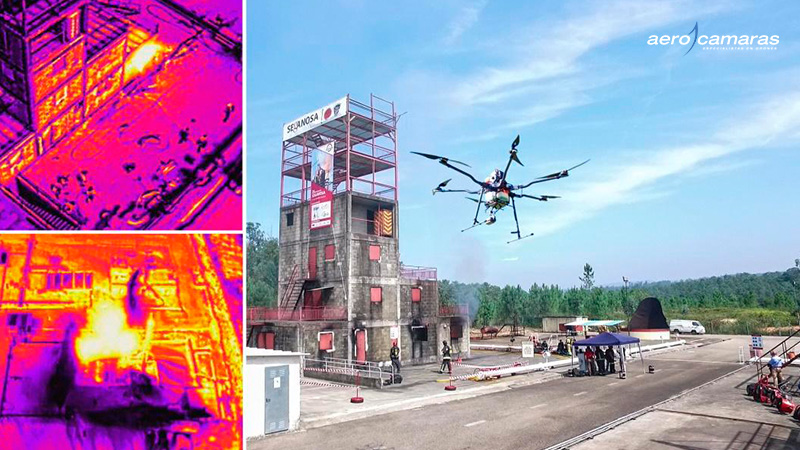

Las obras necesitan un seguimiento constante y los drones facilitan dicha tarea debido a que son capaces de monitorizar el desarrollo de las obras. Los drones con sistema RTK (Real Time Kinematik) envían datos muy precisos de ubicaciones de una zona concreta mediante la captación de fotografías. Los responsables de las obras pueden verlos en cualquier dispositivo móvil conectado y tomar decisiones al respecto.
Los datos obtenidos por el software de los drones pueden enviarse a aplicaciones de software propias de las construcciones. Por ejemplo, existe la posibilidad de que los datos almacenados en CAD o Google Earth se puedan exportar a la planificación de vuelo del dron. El UAS realizará la ruta establecida captando diferentes puntos que se pueden utilizar en CAD para generar superficies 3D, curvas de nivel, características de la superficie, documentación y volumetría para cálculos de movimientos de tierr
